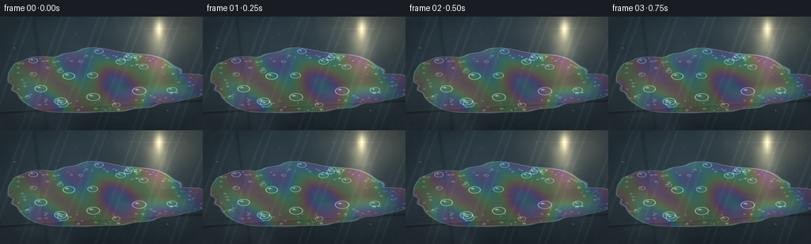
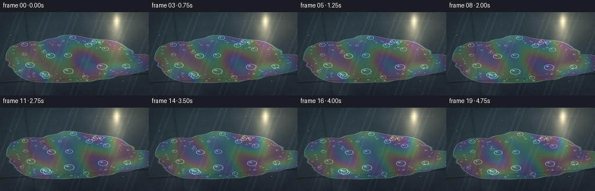
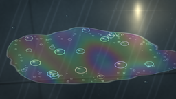

CODING AGENTS AS PIXEL WORLD MODELS
traex/GPT-5.6-Sol · phygen_085
点击播放 · 原生 RGB 像素
逐轮保存的候选
回放视频、检查图与代码变化。
每份候选均可单独播放。实际图片检查记录在下方工具轨迹中。
候选 01播放与检查图
点击播放 · 原生 RGB 像素


展开代码变化
--- 上一保存版本
+++ 本次保存版本
@@ -0,0 +1,216 @@
+from pathlib import Path
+import json
+import numpy as np
+from scipy.ndimage import gaussian_filter, shift, distance_transform_edt
+from PIL import Image
+import artifact_io
+
+# A procedural macro photograph of a thin detergent film flowing over wet slate.
+# All textures, bubbles and thin-film colors are generated mathematically.
+ROOT = Path(__file__).resolve().parent
+spec = json.loads((ROOT / "task_spec.json").read_text())
+W, H, N = spec["width"], spec["height"], spec["frames"]
+S = 3
+w, h = W*S, H*S
+rng = np.random.default_rng(85031)
+yy, xx = np.mgrid[0:h, 0:w].astype(np.float32)
+x = xx / (w-1); y = yy / (h-1)
+
+# Multi-scale natural stone texture.
+def norm(a):
+ a = a - a.min()
+ return a / (a.max() + 1e-7)
+
+raw1 = rng.normal(size=(h,w)).astype(np.float32)
+raw2 = rng.normal(size=(h,w)).astype(np.float32)
+large = gaussian_filter(raw1, 42*S)
+medium = gaussian_filter(raw1, 8*S)
+fine = gaussian_filter(raw2, 1.15*S)
+stone = 0.52*norm(large) + 0.32*norm(medium) + 0.16*norm(fine)
+# Fine mineral veins and linear grain.
+veins = np.sin(34*x + 7*y + 5.0*gaussian_filter(raw1, 12*S))
+veins = np.exp(-((veins+0.78)/0.12)**2)
+
+# Slate base, already darkened by a sheet of water.
+illum = 0.82 + 0.24*(1-y) + 0.13*x
+base = np.empty((h,w,3), np.float32)
+base[...,0] = (28 + 31*stone + 10*veins)*illum
+base[...,1] = (39 + 36*stone + 11*veins)*illum
+base[...,2] = (45 + 39*stone + 13*veins)*illum
+# Cool reflected sky across the wet surface.
+sky = np.clip(1 - y/0.72, 0, 1)[:, :, None]
+base = base*(1-0.16*sky) + np.array([48,76,91],np.float32)*0.16*sky
+
+# A few very soft, perspective grout seams establish that this is a real surface.
+def line_dist(x1,y1,x2,y2):
+ return np.abs((y2-y1)*x - (x2-x1)*y + x2*y1-y2*x1) / np.hypot(y2-y1,x2-x1)
+seam1 = np.exp(-(line_dist(-.1,.86,1.08,.73)/.010)**2)
+seam2 = np.exp(-(line_dist(.16,-.1,.24,1.1)/.008)**2)
+base *= (1 - .24*(seam1 + .55*seam2))[...,None]
+# Bright wet rim on the sun-facing side of the seams.
+base += (7*np.exp(-(line_dist(-.1,.845,1.08,.715)/.006)**2))[...,None]
+
+# Static water sheen and directional sunlight reflection.
+# The glow is broad but broken, as a reflected patch of sun on rough wet slate.
+sun_glow = np.exp(-(((x-.82)/.20)**2 + ((y-.10)/.26)**2))
+sun_streak = np.exp(-(((x-.78)/.055)**2 + ((y-.23)/.31)**2))
+broken = np.clip(.45 + .65*norm(gaussian_filter(raw2, 5*S)), 0, 1)
+base += sun_glow[...,None]*np.array([63,54,38])
+base += (sun_streak*broken)[...,None]*np.array([88,78,54])
+
+# Coordinate system aligned with the downhill soap streak.
+ang = -0.10
+cx, cy = .49, .57
+u = (x-cx)*np.cos(ang) + (y-cy)*np.sin(ang)
+v = -(x-cx)*np.sin(ang) + (y-cy)*np.cos(ang)
+# Irregular main detergent film and a thinner tail downhill.
+film_noise_seed = gaussian_filter(rng.normal(size=(h,w)).astype(np.float32), 18*S)
+film_noise = (film_noise_seed - film_noise_seed.mean())/(film_noise_seed.std()+1e-6)
+shape_main = 1 - (u/.42)**2 - (v/.285)**2
+shape_tail = 1 - ((u-.29)/.28)**2 - ((v-.085)/.13)**2
+shape_lobe = 1 - ((u+.25)/.19)**2 - ((v+.08)/.17)**2
+field0 = np.maximum.reduce([shape_main, .77*shape_tail, .82*shape_lobe])
+field0 += .075*film_noise + .032*np.sin(31*u + 7*np.sin(12*v))
+film_mask0 = np.clip(field0/.095 + .50, 0, 1)
+
+# Soap thickness: broad pools plus shallow flowing ridges. Used for interference colors.
+thick_base = (1.05 + .26*np.sin(10*u + 5.5*v) + .18*np.sin(22*u-7*v)
+ + .13*norm(gaussian_filter(raw2, 13*S)))
+thick_base += .42*np.exp(-((u+.12)/.22)**2 - ((v-.02)/.18)**2)
+thick_base += .22*np.exp(-((u-.30)/.18)**2 - ((v-.07)/.09)**2)
+
+# Deterministic bubble inventory. Accept points only inside the stable film.
+def sample_inside(count, xr=(.10,.92), yr=(.27,.89)):
+ out=[]
+ while len(out)<count:
+ px=rng.uniform(*xr); py=rng.uniform(*yr)
+ ix=min(w-1,max(0,int(px*(w-1)))); iy=min(h-1,max(0,int(py*(h-1))))
+ if field0[iy,ix] > .02:
+ out.append((px,py))
+ return out
+large_pts = sample_inside(20)
+large_r = rng.uniform(.012,.041,len(large_pts))
+# Concentrate tiny foam at the lower and left edge, like surfactant gathering at a meniscus.
+edge_binary = field0>0
+inside_dist = distance_transform_edt(edge_binary)/S
+edge_candidates = np.argwhere((inside_dist>1.5)&(inside_dist<16)&(y>.34))
+sel = edge_candidates[rng.choice(len(edge_candidates), size=105, replace=False)]
+foam_pts=[(p[1]/(w-1),p[0]/(h-1)) for p in sel]
+foam_r=rng.uniform(.0028,.0090,len(foam_pts))
+# A handful of water beads outside the soap patch.
+beads=[(.075,.28,.016),(.91,.54,.010),(.83,.83,.015),(.38,.16,.009),(.96,.72,.007),(.12,.76,.011)]
+
+frames=[]
+for k in range(N):
+ t=k/(N-1)
+ phase=2*np.pi*t
+ # Film slowly creeps downhill (a few image pixels over the full shot).
+ driftx=.009*t; drifty=.014*t
+ uk = u - driftx*np.cos(ang) - drifty*np.sin(ang)
+ vk = v + driftx*np.sin(ang) - drifty*np.cos(ang)
+ fmain = 1 - (uk/.42)**2 - (vk/.285)**2
+ ftail = 1 - ((uk-.29)/.28)**2 - ((vk-.085)/.13)**2
+ flobe = 1 - ((uk+.25)/.19)**2 - ((vk+.08)/.17)**2
+ field=np.maximum.reduce([fmain,.77*ftail,.82*flobe])
+ # Advect the boundary irregularity with the detergent.
+ adv_noise=shift(film_noise, shift=(drifty*h,driftx*w), order=1, mode='nearest')
+ field += .075*adv_noise + .032*np.sin(31*uk+7*np.sin(12*vk)+.18*np.sin(phase))
+ mask=np.clip(field/.095+.50,0,1)
+
+ # Slowly moving thickness waves generate coherent rainbow motion, not flicker.
+ thickness=(1.06 + .26*np.sin(10*uk+5.5*vk-0.34*phase)
+ + .18*np.sin(22*uk-7*vk-0.22*phase)
+ + .13*norm(gaussian_filter(raw2,13*S)))
+ thickness += .42*np.exp(-((uk+.12)/.22)**2-((vk-.02)/.18)**2)
+ thickness += .22*np.exp(-((uk-.30)/.18)**2-((vk-.07)/.09)**2)
+
+ # Thin-film interference: phase-separated RGB responses under white sunlight.
+ optical=2*np.pi*(1.36*thickness + .05*np.sin(phase))
+ rainbow=np.stack([
+ .5+.5*np.cos(optical+.18),
+ .5+.5*np.cos(optical+2.23),
+ .5+.5*np.cos(optical+4.31)],axis=-1)
+ # Suppress synthetic saturation: detergent is translucent, colors only appear in highlights.
+ rainbow=rainbow*.60 + .40
+ img=base.copy()
+ film_tint=np.array([31,73,88],np.float32)
+ alpha=(.13+.13*sun_glow+.05*(1-y))*mask
+ img=img*(1-alpha[...,None])+film_tint*alpha[...,None]
+ ir_strength=(.22+.28*sun_glow+.08*sun_streak)*mask
+ img=img*(1-ir_strength[...,None])+rainbow*255*ir_strength[...,None]
+
+ # Gloss follows local thickness gradients. Sunward slope catches warm highlights.
+ gy,gx=np.gradient(thickness)
+ slope=np.clip((-.7*gx-1.1*gy)*65,0,1)*mask
+ img += slope[...,None]*np.array([35,32,24])
+ # A sharp but translucent meniscus around the film.
+ edge=np.exp(-(field/.030)**2)
+ img += edge[...,None]*np.array([82,91,85])*(.55+.45*sun_glow[...,None])
+ img -= np.exp(-((field-.055)/.030)**2)[...,None]*np.array([10,7,3])
+
+ # Wet micro-glints: tiny sparkles strongest near reflected sun.
+ glint_noise=norm(gaussian_filter(np.roll(raw2,k//4,axis=1),.45*S))
+ glints=np.clip((glint_noise-.78)*7,0,1)*(sun_glow*.85+.10)
+ img += glints[...,None]*np.array([105,97,77])
+
+ # Render soap bubbles with a shaded transparent dome, dark inner edge and iridescent rim.
+ bxgrid=x; bygrid=y
+ for i,((px,py),rad) in enumerate(zip(large_pts,large_r)):
+ # Slow downhill motion, with smaller bubbles following flow slightly faster.
+ bx=px+driftx*(1.0+.25*(i%3))
+ by=py+drifty*(1.0+.18*((i+1)%4))
+ rr=rad*(1+.035*np.sin(phase*.55+i*1.7))
+ q=np.sqrt(((bxgrid-bx)/(rr+1e-6))**2+((bygrid-by)/(rr+1e-6))**2)
+ disk=np.clip(1-q,0,1)*mask
+ # Lens-like dim lower half / lifted blue center.
+ img += disk[...,None]*np.array([4,12,16])
+ ring=np.exp(-((q-.88)/.075)**2)*mask
+ darkring=np.exp(-((q-.70)/.08)**2)*mask
+ hue=np.array([.5+.5*np.cos(i*1.9),.5+.5*np.cos(i*1.9+2.1),.5+.5*np.cos(i*1.9+4.2)])
+ img += ring[...,None]*(np.array([66,75,76])+42*hue)
+ img -= darkring[...,None]*np.array([9,8,5])
+ # Crescent specular highlight at upper-left of each dome.
+ hl=np.exp(-(((bxgrid-(bx-.30*rr))/(.24*rr+1e-6))**2
+ +((bygrid-(by-.34*rr))/(.18*rr+1e-6))**2))
+ img += hl[...,None]*np.array([116,111,94])*mask[...,None]
+
+ # Dense miniature foam bubbles along the accumulating meniscus.
+ for i,((px,py),rad) in enumerate(zip(foam_pts,foam_r)):
+ bx=px+driftx*(.7+.2*(i%4)); by=py+drifty*(.75+.1*(i%3))
+ rr=rad*(1+.06*np.sin(phase*.45+i))
+ q=np.sqrt(((x-bx)/(rr+1e-6))**2+((y-by)/(rr+1e-6))**2)
+ ring=np.exp(-((q-.78)/.22)**2)
+ fill=np.clip(1-q,0,1)
+ img += ring[...,None]*np.array([46,52,50]) + fill[...,None]*np.array([10,14,14])
+ hl=np.exp(-(((x-(bx-.25*rr))/(.24*rr+1e-6))**2+((y-(by-.28*rr))/(.22*rr+1e-6))**2))
+ img += hl[...,None]*np.array([70,68,58])
+
+ # Separate hemispherical water beads on the surrounding soaked slate.
+ for i,(bx,by,rr) in enumerate(beads):
+ q=np.sqrt(((x-bx)/rr)**2+((y-by)/rr)**2)
+ disk=np.clip(1-q,0,1)
+ img -= np.exp(-((q-.92)/.10)**2)[...,None]*np.array([10,10,8])
+ img += disk[...,None]*np.array([4,12,16])
+ hl=np.exp(-(((x-(bx-.30*rr))/(.18*rr))**2+((y-(by-.35*rr))/(.15*rr))**2))
+ img += hl[...,None]*np.array([145,138,112])
+
+ # Warm, clipped sun reflection and a small optical star on the wet film.
+ pulse=.96+.04*np.sin(.35*phase)
+ hot=np.exp(-(((x-.785)/.024)**2+((y-.105)/.075)**2))*pulse
+ img += hot[...,None]*np.array([155,139,103])
+ star=(np.exp(-np.abs(x-.785)/.0025)*np.exp(-np.abs(y-.105)/.105)
+ +np.exp(-np.abs(y-.105)/.0030)*np.exp(-np.abs(x-.785)/.10))*sun_glow
+ img += star[...,None]*np.array([36,31,23])
+
+ # Gentle photographic vignette and fine sensor grain (fixed pattern avoids temporal noise).
+ vign=np.clip(1-.19*((x-.5)**2/.25+(y-.5)**2/.25),.72,1)
+ img*=vign[...,None]
+ img += fine[...,None]*1.4
+ img=np.clip(img,0,255).astype(np.uint8)
+ # Supersampled downsampling gives clean bubble rims and natural detail.
+ im=Image.fromarray(img,"RGB").resize((W,H),Image.Resampling.LANCZOS)
+ frames.append(np.asarray(im))
+
+frames=np.stack(frames).astype(np.uint8)
+artifact_io.save(frames, ROOT)
+print(f"saved {frames.shape} RGB frames to {ROOT}")
可观测工具轨迹
实际执行的命令与返回图片。
命令 1exit 0
/bin/bash -lc "ls -la && printf '\\n--- prompt.txt ---\\n' && cat prompt.txt && printf '\\n--- GENERATION_RULES.md ---\\n' && cat GENERATION_RULES.md && printf '\\n--- task_spec.json ---\\n' && cat task_spec.json"
命令 2exit 0
/bin/bash -lc "find . -maxdepth 3 -type f -printf '%p\\n' | sort | head -200"
命令 3exit 0
/bin/bash -lc "sed -n '1,240p' artifact_io.py && python - <<'PY'
try:
import scipy; print('scipy', scipy.__version__)
except Exception as e: print('no scipy',e)
import PIL; print('PIL',PIL.__version__)
PY"命令 4exit 1
/bin/bash -lc "cat > generate.py <<'PY'
from pathlib import Path
import json
import numpy as np
from scipy.ndimage import gaussian_filter, shift, distance_transform_edt
from PIL import Image
import artifact_io
# A procedural macro photograph of a thin detergent film flowing over wet slate.
# All textures, bubbles and thin-film colors are generated mathematically.
ROOT = Path(__file__).resolve().parent
spec = json.loads((ROOT / \"task_spec.json\").read_text())
W, H, N = spec[\"width\"], spec[\"height\"], spec[\"frames\"]
S = 3
w, h = W*S, H*S
rng = np.random.default_rng(85031)
yy, xx = np.mgrid[0:h, 0:w].astype(np.float32)
x = xx / (w-1); y = yy / (h-1)
# Multi-scale natural stone texture.
def norm(a):
a = a - a.min()
return a / (a.max() + 1e-7)
raw1 = rng.normal(size=(h,w)).astype(np.float32)
raw2 = rng.normal(size=(h,w)).astype(np.float32)
large = gaussian_filter(raw1, 42*S)
medium = gaussian_filter(raw1, 8*S)
fine = gaussian_filter(raw2, 1.15*S)
stone = 0.52*norm(large) + 0.32*norm(medium) + 0.16*norm(fine)
# Fine mineral veins and linear grain.
veins = np.sin(34*x + 7*y + 5.0*gaussian_filter(raw1, 12*S))
veins = np.exp(-((veins+0.78)/0.12)**2)
# Slate base, already darkened by a sheet of water.
illum = 0.82 + 0.24*(1-y) + 0.13*x
base = np.empty((h,w,3), np.float32)
base[...,0] = (28 + 31*stone + 10*veins)*illum
base[...,1] = (39 + 36*stone + 11*veins)*illum
base[...,2] = (45 + 39*stone + 13*veins)*illum
# Cool reflected sky across the wet surface.
sky = np.clip(1 - y/0.72, 0, 1)[:, :, None]
base = base*(1-0.16*sky) + np.array([48,76,91],np.float32)*0.16*sky
# A few very soft, perspective grout seams establish that this is a real surface.
def line_dist(x1,y1,x2,y2):
return np.abs((y2-y1)*x - (x2-x1)*y + x2*y1-y2*x1) / np.hypot(y2-y1,x2-x1)
seam1 = np.exp(-(line_dist(-.1,.86,1.08,.73)/.010)**2)
seam2 = np.exp(-(line_dist(.16,-.1,.24,1.1)/.008)**2)
base *= (1 - .24*(seam1 + .55*seam2))[...,None]
# Bright wet rim on the sun-facing side of the seams.
base += (7*np.exp(-(line_dist(-.1,.845,1.08,.715)/.006)**2))[...,None]
# Static water sheen and directional sunlight reflection.
# The glow is broad but broken, as a reflected patch of sun on rough wet slate.
sun_glow = np.exp(-(((x-.82)/.20)**2 + ((y-.10)/.26)**2))
sun_streak = np.exp(-(((x-.78)/.055)**2 + ((y-.23)/.31)**2))
broken = np.clip(.45 + .65*norm(gaussian_filter(raw2, 5*S)), 0, 1)
base += sun_glow[...,None]*np.array([63,54,38])
base += (sun_streak*broken)[...,None]*np.array([88,78,54])
# Coordinate system aligned with the downhill soap streak.
ang = -0.10
cx, cy = .49, .57
u = (x-cx)*np.cos(ang) + (y-cy)*np.sin(ang)
v = -(x-cx)*np.sin(ang) + (y-cy)*np.cos(ang)
# Irregular main detergent film and a thinner tail downhill.
film_noise_seed = gaussian_filter(rng.normal(size=(h,w)).astype(np.float32), 18*S)
film_noise = (film_noise_seed - film_noise_seed.mean())/(film_noise_seed.std()+1e-6)
shape_main = 1 - (u/.42)**2 - (v/.285)**2
shape_tail = 1 - ((u-.29)/.28)**2 - ((v-.085)/.13)**2
shape_lobe = 1 - ((u+.25)/.19)**2 - ((v+.08)/.17)**2
field0 = np.maximum.reduce([shape_main, .77*shape_tail, .82*shape_lobe])
field0 += .075*film_noise + .032*np.sin(31*u + 7*np.sin(12*v))
film_mask0 = np.clip(field0/.095 + .50, 0, 1)
# Soap thickness: broad pools plus shallow flowing ridges. Used for interference colors.
thick_base = (1.05 + .26*np.sin(10*u + 5.5*v) + .18*np.sin(22*u-7*v)
+ .13*norm(gaussian_filter(raw2, 13*S)))
thick_base += .42*np.exp(-((u+.12)/.22)**2 - ((v-.02)/.18)**2)
thick_base += .22*np.exp(-((u-.30)/.18)**2 - ((v-.07)/.09)**2)
# Deterministic bubble inventory. Accept points only inside the stable film.
def sample_inside(count, xr=(.10,.92), yr=(.27,.89)):
out=[]
while len(out)<count:
px=rng.uniform(*xr); py=rng.uniform(*yr)
ix=min(w-1,max(0,int(px*(w-1)))); iy=min(h-1,max(0,int(py*(h-1))))
if field0[iy,ix] > .02:
out.append((px,py))
return out
large_pts = sample_inside(20)
large_r = rng.uniform(.012,.041,len(large_pts))
# Concentrate tiny foam at the lower and left edge, like surfactant gathering at a meniscus.
edge_binary = field0>0
inside_dist = distance_transform_edt(edge_binary)/S
edge_candidates = np.argwhere((inside_dist>1.5)&(inside_dist<16)&(y>.34))
sel = edge_candidates[rng.choice(len(edge_candidates), size=105, replace=False)]
foam_pts=[(p[1]/(w-1),p[0]/(h-1)) for p in sel]
foam_r=rng.uniform(.0028,.0090,len(foam_pts))
# A handful of water beads outside the soap patch.
beads=[(.075,.28,.016),(.91,.54,.010),(.83,.83,.015),(.38,.16,.009),(.96,.72,.007),(.12,.76,.011)]
frames=[]
for k in range(N):
t=k/(N-1)
phase=2*np.pi*t
# Film slowly creeps downhill (a few image pixels over the full shot).
driftx=.009*t; drifty=.014*t
uk = u - driftx*np.cos(ang) - drifty*np.sin(ang)
vk = v + driftx*np.sin(ang) - drifty*np.cos(ang)
fmain = 1 - (uk/.42)**2 - (vk/.285)**2
ftail = 1 - ((uk-.29)/.28)**2 - ((vk-.085)/.13)**2
flobe = 1 - ((uk+.25)/.19)**2 - ((vk+.08)/.17)**2
field=np.maximum.reduce([fmain,.77*ftail,.82*flobe])
# Advect the boundary irregularity with the detergent.
adv_noise=shift(film_noise, shift=(drifty*h,driftx*w), order=1, mode='nearest')
field += .075*adv_noise + .032*np.sin(31*uk+7*np.sin(12*vk)+.18*np.sin(phase))
mask=np.clip(field/.095+.50,0,1)
# Slowly moving thickness waves generate coherent rainbow motion, not flicker.
thickness=(1.06 + .26*np.sin(10*uk+5.5*vk-0.34*phase)
+ .18*np.sin(22*uk-7*vk-0.22*phase)
+ .13*norm(gaussian_filter(raw2,13*S)))
thickness += .42*np.exp(-((uk+.12)/.22)**2-((vk-.02)/.18)**2)
thickness += .22*np.exp(-((uk-.30)/.18)**2-((vk-.07)/.09)**2)
# Thin-film interference: phase-separated RGB responses under white sunlight.
optical=2*np.pi*(1.36*thickness + .05*np.sin(phase))
rainbow=np.stack([
.5+.5*np.cos(optical+.18),
.5+.5*np.cos(optical+2.23),
.5+.5*np.cos(optical+4.31)],axis=-1)
# Suppress synthetic saturation: detergent is translucent, colors only appear in highlights.
rainbow=rainbow*.60 + .40
img=base.copy()
film_tint=np.array([31,73,88],np.float32)
alpha=(.13+.13*sun_glow+.05*(1-y))*mask
img=img*(1-alpha[...,None])+film_tint*alpha[...,None]
ir_strength=(.22+.28*sun_glow+.08*sun_streak)*mask
img=img*(1-ir_strength[...,None])+rainbow*255*ir_strength[...,None]
# Gloss follows local thickness gradients. Sunward slope catches warm highlights.
gy,gx=np.gradient(thickness)
slope=np.clip((-.7*gx-1.1*gy)*65,0,1)*mask
img += slope[...,None]*np.array([35,32,24])
# A sharp but translucent meniscus around the film.
edge=np.exp(-(field/.030)**2)
img += edge[...,None]*np.array([82,91,85])*(.55+.45*sun_glow[...,None])
img -= np.exp(-((field-.055)/.030)**2)[...,None]*np.array([10,7,3])
# Wet micro-glints: tiny sparkles strongest near reflected sun.
glint_noise=norm(gaussian_filter(np.roll(raw2,k//4,axis=1),.45*S))
glints=np.clip((glint_noise-.78)*7,0,1)*(sun_glow*.85+.10)
img += glints[...,None]*np.array([105,97,77])
# Render soap bubbles with a shaded transparent dome, dark inner edge and iridescent rim.
bxgrid=x; bygrid=y
for i,((px,py),rad) in enumerate(zip(large_pts,large_r)):
# Slow downhill motion, with smaller bubbles following flow slightly faster.
bx=px+driftx*(1.0+.25*(i%3))
by=py+drifty*(1.0+.18*((i+1)%4))
rr=rad*(1+.035*np.sin(phase*.55+i*1.7))
q=np.sqrt(((bxgrid-bx)/(rr+1e-6))**2+((bygrid-by)/(rr+1e-6))**2)
disk=np.clip(1-q,0,1)*mask
# Lens-like dim lower half / lifted blue center.
img += disk[...,None]*np.array([4,12,16])
ring=np.exp(-((q-.88)/.075)**2)*mask
darkring=np.exp(-((q-.70)/.08)**2)*mask
hue=np.array([.5+.5*np.cos(i*1.9),.5+.5*np.cos(i*1.9+2.1),.5+.5*np.cos(i*1.9+4.2)])
img += ring[...,None]*(np.array([66,75,76])+42*hue)
img -= darkring[...,None]*np.array([9,8,5])
# Crescent specular highlight at upper-left of each dome.
hl=np.exp(-((((bxgrid-(bx-.30*rr))/(.24*rr+1e-6))**2)+(((bygrid-(by-.34*rr))/(.18*rr+1e-6))**2))
img += hl[...,None]*np.array([116,111,94])*mask[...,None]
# Dense miniature foam bubbles along the accumulating meniscus.
for i,((px,py),rad) in enumerate(zip(foam_pts,foam_r)):
bx=px+driftx*(.7+.2*(i%4)); by=py+drifty*(.75+.1*(i%3))
rr=rad*(1+.06*np.sin(phase*.45+i))
q=np.sqrt(((x-bx)/(rr+1e-6))**2+((y-by)/(rr+1e-6))**2)
ring=np.exp(-((q-.78)/.22)**2)
fill=np.clip(1-q,0,1)
img += ring[...,None]*np.array([46,52,50]) + fill[...,None]*np.array([10,14,14])
hl=np.exp(-(((x-(bx-.25*rr))/(.24*rr+1e-6))**2+((y-(by-.28*rr))/(.22*rr+1e-6))**2))
img += hl[...,None]*np.array([70,68,58])
# Separate hemispherical water beads on the surrounding soaked slate.
for i,(bx,by,rr) in enumerate(beads):
q=np.sqrt(((x-bx)/rr)**2+((y-by)/rr)**2)
disk=np.clip(1-q,0,1)
img -= np.exp(-((q-.92)/.10)**2)[...,None]*np.array([10,10,8])
img += disk[...,None]*np.array([4,12,16])
hl=np.exp(-(((x-(bx-.30*rr))/(.18*rr))**2+((y-(by-.35*rr))/(.15*rr))**2))
img += hl[...,None]*np.array([145,138,112])
# Warm, clipped sun reflection and a small optical star on the wet film.
pulse=.96+.04*np.sin(.35*phase)
hot=np.exp(-(((x-.785)/.024)**2+((y-.105)/.075)**2))*pulse
img += hot[...,None]*np.array([155,139,103])
star=(np.exp(-np.abs(x-.785)/.0025)*np.exp(-np.abs(y-.105)/.105)
+np.exp(-np.abs(y-.105)/.0030)*np.exp(-np.abs(x-.785)/.10))*sun_glow
img += star[...,None]*np.array([36,31,23])
# Gentle photographic vignette and fine sensor grain (fixed pattern avoids temporal noise).
vign=np.clip(1-.19*((x-.5)**2/.25+(y-.5)**2/.25),.72,1)
img*=vign[...,None]
img += fine[...,None]*1.4
img=np.clip(img,0,255).astype(np.uint8)
# Supersampled downsampling gives clean bubble rims and natural detail.
im=Image.fromarray(img,\"RGB\").resize((W,H),Image.Resampling.LANCZOS)
frames.append(np.asarray(im))
frames=np.stack(frames).astype(np.uint8)
artifact_io.save(frames, ROOT)
print(f\"saved {frames.shape} RGB frames to {ROOT}\")
PY
python generate.py"命令 5exit 0
/bin/bash -lc "nl -ba generate.py | sed -n '160,215p'"
命令 6exit 0
/bin/bash -lc 'python generate.py'
命令 7exit 0
/bin/bash -lc "python - <<'PY'
import numpy as np
from pathlib import Path
p=Path('.')
z=np.load(p/'pixels.npz')['pixels']
print('pixels',z.shape,z.dtype,'frames',len(list((p/'frames').glob('*.png'))))
print('artifacts',[(f.name,f.stat().st_size) for f in [p/'pixels.npz',p/'index.html',p/'inspection.png',p/'transition_check.png',p/'generate.py']])
# quantify temporal evolution from packed RGB
rgb=np.stack([((z>>(16-8*i))&255) for i in range(3)],axis=-1).transpose(2,0,1,3).astype(np.int16)
print('mean consecutive absolute delta',np.abs(np.diff(rgb,axis=0)).mean(axis=(1,2,3)).round(3).tolist())
PY"视觉工具实际返回图片 1

视觉工具实际返回图片 2

保存候选 1 份；完成命令 7 次；可验证图片返回 2 张。原始 API 响应与完整日志保留在本地。